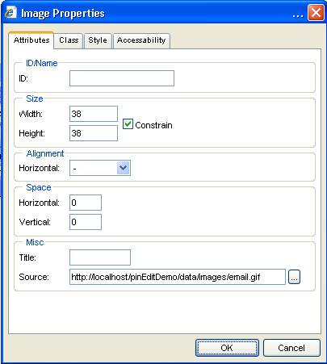
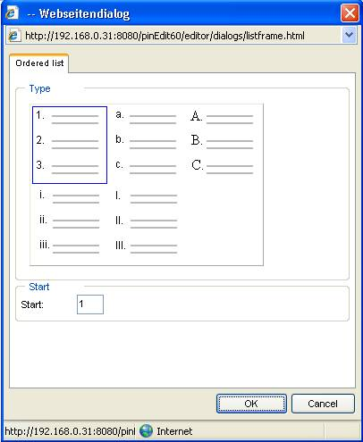

1 Using pinEdit
pinEdit has been designed to offer an easy to
use online HTML editor or Word Processor.
The icons are similar to common word processing
systems.
The developer controls the look and feel of the
editor and how the editor behaves.
Therefore the editor might look different for
each user.
The following manual describes the standard
features and standard look and feel of the editor.
pinEdit in HTML mode.
2
pinEdit
areas
The editor area is divided in different views
which might be turned on or off by the developer.
2.1
Menu
The Menu is a standard application menu which
has a subset of the toolbar icons.
2.2
Toolbar
The toolbar is divided by default in an upper
and lower part.
The upper toolbar contains all editing features
and the lower toolbar contains buttons for different views.
2.2.1
Toolbar
objects
The toolbar has different objects which have
different behaviour:
|
Button |
The button function is activated by clicking
on the button area. |
|
|
Dropdown |
The popup area is activated when clicking
with mouse in dropdown area. |
|
|
Popup Button |
The popup button has two activation areas. When clicking the right part then the popup
area is displayed showing all options. The last selected option becomes the default
option. |
|
|
Colour |
The colour button has to activation areas. When text is selected then clicking on the
left part assigns the selected colour. When clicking at the right part the popup
area is displayed and more colours can be selected |
|
|
Table button |
The table button is a special button which
allows selecting the size of a table. |
|
Each toolbar object displays a tool tip when
the mouse is over the object.
2.2.2
Toolbar
update
There are some dynamic objects like font and
font size which depends on the current cursor position.
When using mouse or cursor keys the toolbar
reflects the current status and displays the current font, font size, font colour
etc.
2.2.3
Toolbar
areas
2.2.3.1 Upper toolbar
The upper toolbar includes all major formatting
options.
2.2.3.2 Lower toolbar
The lower toolbar includes a button for
EDIT view
HTML view (in HTML mode)
PREVIEW view
2.2.3.3 Side bar
The side bar is displayed at the left side of
the design area.
2.3
Hierarchy
bar
The hierarchy bar is available in HTML mode and
displays the current tag hierarchy.
When moving mouse over the hierarchy bar the
selected tag is highlighted in editor.
When clicking on the tag then this tag is
selected.
2.4
Attribute
area
The attribute area is displayed at the right
side of the editor.
All of the formatting dialogs are directly accessible.
When selection changes the attributes are
update.
The update button sets the selected attributes
to current selection.
2.5
Ruler
The ruler is displayed at top of the design
area and can be configured to mm, inch or pixel.
When moving an object with absolute position a
red dotted line displays the current position in ruler.
2.6 Status bar
The status bar is display as part of the lower
toolbar.
When displayed it is used internally to display
different information like
- Display the current selected file
path after opening a file
- The current width/height when
moving an object with absolute position
2.7
Context
Menu
When using right mouse key inside the design
area then a context menu can be opened.
The context menu is dependant of the current
object.
By using context menu the user can call object
specific functions.
2.8
Document
view
The document view draws a grey border around
the design area to give a look and feel like a Word Processor and to simulate a
page width.
This is helpful when i.e. converting the
document to PDF because the document is converted to exactly the same page
width.
3
User
mode
The editor offers 2 different modes which can
be configured by developer.
The HTML editor mode offers all required
dialogs for full HTML editing.
The Word Processor mode avoids all HTML
specific attributes and provides a user interface like a word processor.
Therefore the dialogs for HTML editor and Word Processor
mode are different.
See chapter "Using images" etc. to
see the difference between the dialogs.
3.1
HTML
editor mode
The HTML editor mode provides HTML oriented
dialogs to be able to have full control over most attributes.
Only in HTML mode the "HTML" view is
available.
The "HTML" view displays the content
HTML code with syntax colouring and indention.
3.2
Word
Processor mode
The Word Processor mode allows editing
documents without any knowledge of HTML.
Therefore there are no HTML specific settings
in dialogs.
The features are limited by default to Word
Processor compliant features.
4
Formatting
4.1
Selection
All formatting options normally require a text
or object selection (exception see "Pre-Selection")
A text can be selected by using mouse or
keyboard.
An object can be only selected with mouse.
Please see chapter "Key support" how
to select text with keyboard.
4.1.1 Select tables
Tables can be selected by clicking the table
border or using the context menu option "Select table".
4.1.2 Pre-Selection
Some formatting features are available without
having a selection.
But this option depends on the formatting mode
the developer has defined.
When formatting uses standard tags then font,
font size, bold, italic, underline formatting can be selected without having a
selection.
When entering characters the text is typed in
pre-selected format.
4.2
Selecting
colours
Colours can be set by using toolbar colour
buttons for fore colour and back colour or using
attribute dialogs.
Using the left part of the colour button
assigns the selected colour to selection.
Using the down arrow symbol displays the colour
popup.
Existing colours can be removed by using
"No colour".
A colour can be selected from standard web colours.
Pressing the "More colours" button
opens the colour dialog.
The first tab displays the standard colours and
the used colours.
Used colours are all colours that are already
used in document. So it is easy to select the same colour that is already used
in document for another location.
The colour selection dialog allows individual
selection of colours.
4.3
Standard
formatting
Any text/object can be formatted with standard
formatting options:
|
Name |
Description |
|
|
Setting Standard format (HTML mode) |
|
|
Setting Font All web safe fonts are listed |
|
|
The font size is set dependant of the
configuration i.e. in pixel (px) or in pt. There is a standard range of 6-48. |
|
|
Bold |
|
|
Italic |
|
|
Underline |
|
|
Strike through |
|
|
Superscript |
|
|
Subscript |
|
|
Justify left |
|
|
Justify center |
|
|
Justify right |
|
|
Justify full |
|
|
Line spacing |
|
|
Unordered list |
|
|
Ordered list |
|
|
Indent |
|
|
Outdent |
5 Using images
Images are a very important part of a document.
Therefore there are a lot of functions for
upload and insert images and setting attributes.
5.1
Uploading
images
Please see chapter "Upload" for
uploading images.
5.2
Inserting
images
There are different options how to insert
images into a document.

5.2.1
From
server
The most used way is to insert images from a
web server.
After activating this feature the "Insert
image" dialog is displayed.
All images of the current folder are displayed
in preview mode.
When moving the mouse cursor over the image the
image width/height and size is displayed.
When an image is selected at the left side the
image is displayed in preview area in real size.
When selecting an image in preview area the
image is inserted in the document.
When double clicking an image the image is also
inserted.
The toolbar includes feature for
- returning to parent folder
- deleting files
- renaming files
- creating a new folder
5.2.2
Upload
and insert
See chapter "Upload"
5.2.3
Insert
web image
When choosing this item the user can insert any
image from any server outside the web server by specifying a full url.
5.2.4
Insert
local image
A local image can be inserted by selecting
"Insert local image" item.
The standard dialog of the local operating
system is opened and the user can select a local file.
The file is NOT uploaded but a local reference
is inserted into the document.
In this case the document does only display the image properly when used
locally.
5.3
Resizing
images
When resizing an image it is important that the
aspect ratio of the image is retained.
This is automatically done when resizing an
image.
If you resize the width of the image the height
is automatically calculated and set.
The image can also be reset to its original
size by opening context menu and selecting "Original size".
5.4
Moving
images
When using images in absolute mode the image
can be moved by moving mouse.
5.5
Image
attributes
There are different dialogs for HTML and Word
processor mode.
There are several image attributes that can be
set.
Opening context menu and selecting "Image
properties" opens the image attribute dialog.
5.5.1
HTML
mode
The image dialog is divided in tabs
"attributes", "class", "style" and "accessibility".

The following attributes can be set:
|
Attribute |
Description |
|
ID |
Specifies the object id attribute |
|
Width/height |
The user can manually enter the width/height |
|
Alignment |
Sets the objects alignment |
|
Space |
Sets the vertical and horizontal space |
|
Title |
Specifies the image title |
|
Source |
Displays the current image source. The source can be modified by pressing ...
button and selecting a new image. |
For a description of "class",
"style" and "accessibility" tab please see chapter
"Using styles".
5.5.2
Word
processor mode
The image dialog in Word Processor mode is
limited to non HTML features.
The layout tab allows setting special
attributes with graphical display.
6 Using tables
A table can be easily inserted with table button.
The table can be selected by clicking at the
table border. When table border is 0 then the context menu option "Select
table" can be used.
6.1
Resizing
If the table is selected it can be resized by
moving the 4 resize buttons or by calling the table property dialog and enter
with/height.
6.1.1
Resizing
columns
Table columns can be resized by moving the
cursor over a table column.
A red dotted line appears when over the column.
Now the column can be dragged and moved to the
left or right.
6.2
Removing
A table can be removed by selecting table and
pressing "Delete" button.
The content of a table can be removed by
selecting the table cells and pressing "Delete" button.
6.3
Table
border Highlight mode
If the table border is set to 0 the table
border is displayed with a grey dotted line.
6.4
Using
tab key
When using tab key inside a table cell then the
cursor is moved to next cell.
When the cursor is in last cell a new table row
is inserted.
Shift-Tab moves the cursor to previous cell.
6.5
Static/dynamic
tables
There are different table types to make table
usage more similar to a Word Processor table.
A standard HTML table (dynamic table) changes
the column width when entering text.
A static table does not change column width.
The table type can be set by context menu.
By default the static table is used.
6.6
Table
attributes
The table attribute dialogs are different
between HTML mode and Word processor mode.
6.6.1
HTML
mode
The table attributes can be set by calling the
table property dialog using context menu or pressing "Table property"
button when a table is selected.
The following table attributes can be set:
|
Name |
Description |
|
ID |
The table object id. |
|
Width/Height |
Manual setting of width/height in pixel |
|
Cell spacing |
The distance between cells |
|
Cell padding |
The distance between text and cell |
|
Border |
The table border |
|
Border colour |
The colour of table border |
Please see chapter "Using styles" how
to use "class" and "style" tab.
6.6.2
Word
Processor mode
In Word Processor mode the user interface has
been designed more graphically.
The table tab allows easy setting of standard
table attributes.
The border tab allows setting borders like in a
word processor.
The shade tab allows defining colour with
preview.
The margin tab allows defining object margins.
6.7
Table
functions
There are several table functions for editing
tables.
The table functions are available in toolbar
or can be called by context menu.
|
Function |
Description |
|
|
Insert row before current row |
|
|
Insert row after current row |
|
|
Delete current row |
|
|
|
|
|
Insert column before current column |
|
|
Insert column after current column |
|
|
Delete current column |
|
|
|
|
|
Delete current cell |
|
|
Add cell |
|
|
|
|
|
Column span The current cell and the next right cell
become a new cell |
|
|
Divide cell A cell with column span is divided in 2
single cells |
|
|
|
|
|
Row span The current cell and the next lower cell
become a new cell |
|
|
|
|
|
Convert cells A table row can be defined as standard cell
(td) or header cell (th) |
6.8
Cell
attributes
The cell attribute dialogs are different
between HTML mode and Word processor mode.
6.8.1
HTML
mode
The cell attributes can be set by calling the
cell property dialog using context menu or pressing "Cell property"
button when cursor is inside a table cell.
The following cell attributes can be set:
|
Name |
Description |
|
ID |
The table object id. |
|
Width/Height |
Manual setting of width/height in pixel |
|
Horizontal alignment |
Defines horizontal alignment of text |
|
Vertical alignment |
Defines vertical alignment of text |
|
Col span |
Defines column span |
|
Row span |
Defines row span |
|
Wrap |
Defines if text wraps to next line |
Please see chapter "Using styles" how
to use "class" and "style" tab.
6.8.2
Word
Processor mode
The call tab allows editing the standard cell
attributes like width/height and alignment.
The border tab allows setting of cell border
attributes.
The shade tab allows defining cell colours.
The margin tab allows setting of cell margins.
7
Using
links
7.1
HTML
mode
A link can be created by selecting a text and
pressing button in toolbar.
|
Attribute name |
Description |
|
ID |
The object id attribute |
|
Text |
The link text. Should be set when editing a link. |
|
Type |
The type of link that shall be created |
|
Anchor |
A list of available anchors in document so
that a link to an anchor can be created |
|
Url |
The link url. An url can be selected by activating ...
button. |
|
Target |
The link target |
|
Title |
The link title |
7.2
Word
Processor mode
In word processor mode the dialog does not contain
any HTML specific attributes.
7.3
Remove
links
A link can be removed by pressing "Remove
link" button in link dialog or by using link context menu.
7.4
Using
anchor/bookmark
An anchor can be created by using the button.
The anchor is created at current cursor
location after entering the anchors name in text box and pressing
"OK".
The anchor is displayed with a symbol and can
be edited with context menu.
8
Standard
features
8.1 New
There are 2
variants of the "New" function.
1) The default "New" function deletes the entire content of
the editor including style sheets.
2) New with template
This option
calls the open dialog and allows selecting a template.
8.2 Search/Replace
The search/replace function opens the search dialog.
There are both
a search and replace option available.
The
searched text is displayed in design view.
8.3 Print
The "print" feature opens the standard printer dialog of
your operating system.
A printer
can be selected and the editors content can be printed.
Print preview
can be reached by calling "Print Preview" feature and select
"Print Preview" in menu.
The page
margin is defined by browser settings.
8.4 Print preview
The print preview feature opens the content of the editor in a new
window.
The content
is displayed like the real page outside the editor.
The special
display feature of objects like tables with no border or anchors is turned of
for print preview.
8.5 Cut, Copy ,Paste
All
features can be called by toolbar, menu, context menu or keys.
Please see
chapter "Key support" for using keys.
The "Cut" feature removes the selection and copies to clipboard.
The "Copy" feature copies the selection to clipboard
The "Paste" feature inserts the content of clipboard at
current cursor position.
This works
as well for internal as external content.
If the HTML
optimizer is on then content from external sources like MS Word is optimized
before insertion.
Paste from Word
This
function is not required when using the HTML optimizer.
The content
of the clipboard is inserted at the current cursor position and the entire
document is cleaned by using the Word cleaner.
Paste text
Die Paste text" feature inserts the pure
text without formatting.
8.6
Undo/Redo
Almost each formatting step can be Undo
If all undo
steps have been processed there are no more changes.
All "Undo" steps can also be redone
by pressing "Redo".
8.7 Time/date
When using
"Insert time" or "Insert date" feature the current time and date are inserted at current cursor position.
8.8
Auto
text
The "Autotext"
feature can be used to create and edit text snippets for using in document
When
pressing the left part of the button then the open dialog is called.
All
available text snippets are listed and can be inserted.
The
difference between the file open dialog and the "Autotext" dialog is
that the "Autotext" content is inserted at current cursor position.
When
pressing "New" item a new editor window is opened where the user can
edit text snippets.
8.9
Full screen display
When using the "Full screen" feature the editor is
enlarged to the entire window size.
When
activating this feature again the editor's size will be set to standard size.
This
feature can be activated by toolbar or by pressing CTRL+F11.
8.10 Insert special characters
International characters can be inserted by
using the "Insert special characters" feature.
The dialog displays
all of the available characters.
When moving
the mouse the HTML code and Unicode number of the selected character is
displayed.
When
clicking on the selected character the character is inserted.
Multiple
characters can be inserted without leaving dialog.
8.11 Key support
|
Key |
Aktion |
|
Shift-END |
Selects
from current cursor position to line end. |
|
Shift-Cursor right |
Selects next right character |
|
Shift-Cursor left |
Selects next left character |
|
Shift-Cursor down |
Selects to next line |
|
Shift-Cursor up |
Selects to previous line |
|
Shift-Ctrl-Cursor right |
Selects next right word |
|
Shift-Ctrl-Cursor left |
Selects next left word |
|
Ctrl+a |
Selects entire content |
|
Ctrl+c |
Cut |
|
Ctrl+x |
Copy |
|
Ctrl+v |
Paste |
|
Tab |
Outside a
table: Text is
intended Inside a
table: The
cursor moves to next cell. When the
last cell is reached then anew line is added Inside a
list: The
current item is moved to next level |
|
Shift-Tab |
Outside a
table: Text is
outdented Inside a
table: The
cursor is moved the previous cell Inside a
list: The
current item is moved to previous level |
|
Ctrl+s |
Calls save dialog |
|
Ctrl+F10 |
Displays current version number |
|
Ctrl+F11 |
Turns
"Full screen" mode on/off |
8.12
File
functions
The editor
can "open" and "save/save as" files from a remote server .
Additionally
the content can saved to a local file.
8.12.1
Open
files
The "file
open" option
opens the file select dialog:
The file
dialog lists all available folders/files at the left side of the dialog.
By double
clicking at the folder the sub folder can be displayed.
When
clicking on a file the file content is displayed in preview window at the right
side.
A file can
be loaded into the editor by double clicking at the file or selecting the file
and processing "Open" button.
The button changes the folder to its parent.
The button allows deleting the current file.
The button allows renaming the current file.
The button allows creating new folders.
8.12.2 Saving files
Pressing
the "save" or "save as" button saves the content by default to a
remote server.
The button saves to local file system.
8.13 Upload
The
"Upload" feature allows uploading documents and images to a defined
folder at web server.
8.13.1
Uploading
files and documents
Therefore
there are options for document and image upload in menu.
Activating
one of the items opens the "Upload" dialog.
A local
file can be selected by pressing the "Open" button.
The
standard file dialog of operating system will open and the user can select a
file.
Pressing
the "Select" button allows selecting a folder or subfolder where the
user wants to upload the document or image.
In this
dialog the user can create new folders or rename an existing one.
To select
the upload folder one of the folders has to be selected and the OK button has
to be pressed.
The upload
process is initiated by pressing "Upload" button.
8.13.2
Uploading
and inserting images
It is also
possible to directly upload and insert an image.
This
feature can be reached through "Image" button.
The
selecting procedure is the same is above but after pressing the
"Upload" button the image is uploaded and inserted at the current cursor position.
9
Miscellaneous
9.1
Characters
The editor
should be able to process all kinds of characters.
For special
characters please call the special characters dialog.
9.2
ENTER
Key
The ENTER
key can have different behaviour depending of different options of HTML.
By default the ENTER key inserts a line break without line space.
9.3
Default
settings
The editor
can be configured for using
- default font
- default font size
- default background color
9.4
Cut/Copy/Paste
The editor
allows Cut/Copy/Paste by using keys, toolbar menu or context menu.
9.5
Drag
and Drop
The editor
allows drag'n drop from internal and external sources.
9.6 Special display of objects
To improve
usability some objects are display in a special way.
9.6.1 Tables
If the
table border is set to 0 then the table is displayed with a grey dotted border.
9.6.2 Anchor
An anchor or
bookmark is displayed with a special symbol.
9.6.3 Non editable areas
Non
editable areas are display with a grey background.
9.6.4 Invisible characters
The feature allows displaying hard and soft line
breaks in editor.
10
Using
styles
There are
different ways of using styles in the editor.
10.1
Setting
object styles
Setting a
style class can be done by selecting objects property dialog and using
"class" tab.
All
available styles are listed in dropdown and can be assigned to the current
object.
10.2
Using
style attributes
The style
attributes are part of the "Style" tab in most object dialogs.
The
"Style" tab is part of the object property dialog.
If an
object like a table, image, link etc. is selected the property dialog can be
opened by using context menu and "Properties" item.
The
"Style" tab consists of 6 sub tabs.
10.2.1
Style
font tab
The style
font tab allows setting all important font and formatting styles for the
selected object.
10.2.2
Style
background tab
The
background tab allows setting of background colour and background image.
10.2.3
Style
border tab
The border
tab allows editing of the objects border settings.
10.2.4
Style
margin tab
The margin
tab allows setting of the margin and padding attributes.
10.2.5
Style
text tab
The text
tab allows setting alignment, spacing and text flow options.
10.2.6
Style
layout tab
The layout
tab allows editing of visibility, position size and other options.
10.3
Using
internal styles
Internal
styles are defined by the "style" tag in head tag which are part of
the current document.
The editor
offers a style editor for creating and editing internal styles
A new
internal style can be created by entering a style name in the text box and
pressing "Add" button.
The new
style is listed in the style list box.
The style
can be defined by selecting attributes from character, shade and border tab.
10.3.1
Character
tab
The character
tab allows setting font and standard formatting attributes.
10.3.2
Shade
tab
The shade
tab allows editing colours.
10.3.3
Border
tab
The border
tab allows setting of style borders.
After
setting the attributes the style is displayed as real preview.
After
pressing OK button the inline style is created and inserted in the document:
10.3.4
Using
style dropdown
The style
dropdown is filled with created styles:
The style
can now be assigned to selected text.
10.4
Using
external style sheets
The editor
allows adding, editing and removing external style sheets during run time.
10.4.1
Add
external styles
Adding an
external style sheets can be done by calling "Add external style sheet"
item in "external style sheet button".
The open
dialog appears displaying all available style sheets.
If a style
sheet is selected it is added to the document and the style dropdown is filled
with all available styles.

The styles
can now be assigned i.e. to a text selection.
10.4.2
Edit
external style sheets
External style
sheets in documents can be added by using the editor add-in
"pinStyle".
See chapter
"add-ins" for more details.
10.4.3
Removing
external style sheets
When using
the "Removing external style sheets" feature allows removing of style
sheets.
If there is
only one style sheet it is removed.
If there
are more style sheets a dialog with all available style sheets is opened.
The
selected style sheets can be removed with "Remove" button.
10.5
Object
oriented styles
The editor
supports also object oriented styles. Those styles are related to a special
object.
They are
listed in style dropdown with a symbol pointing out the parent of the style.
The last
item is an object oriented style related to a cell object.
This style
is only listed in style dropdown when a table cell is selected.
This object
oriented style can only be assigned to its parent.
10.6
Removing
styles
Assigned
styles can be removed by
- using
style dropdown and select "Standard"
- using
context menu and select "Remove style"
- opening
object property window and select tab "class" and select
"Standard"
11
Using
forms
The editor
provides functions for creating and adding HTML forms.
Most of the
features are located by default at sidebar.
A form can
be inserted with button and is displayed with a red dotted
border.
With
context menu the form can be removed and edited.
The
following form elements are available:
|
Name |
|
Text |
|
Button |
|
Input |
|
Checkbox |
|
Radio
button |
|
Dropdown
list |
|
List |
|
Hidden
field |
|
Text area |
The
property dialogs can be opened by using context menu and selecting
"Properties".
11.1
Input
properties
The input
property dialog allows setting attributes like name, value and changing object
type.
11.2
Select
properties
The select
property dialog allows i.e. item specification.
12
Special
functions
12.1
List
Ordered and
unordered lists can be set with toolbar buttons.
When using
context menu some additional attributes can be set.
12.1.1
Ordered
list

12.1.2
Unordered
list
12.2
Horizontal
row
The
horizontal row can be inserted with button.
When using
context menu additional attributes can be set.
12.3
Page
properties
When using
context menu at an empty space inside the document the page dialog is opened.
The page
dialog allows setting of page attributes.
The dialog
for HTML and Word Processor mode is different.
12.3.1
HTML
mode
12.3.2
Word
Processor mode
12.4 Optimizer
The
optimizer improves the HTML code, removes unused code
and changes invalid code in valid.
The
optimizer is automatically executed when using "Paste" function.
12.5
Remove
formatting
Formatting
can be removed by different options depending of the user mode.
12.5.1
HTML
mode
In HTML
mode the "Cleaner" offers different options to clean the current
content
The
"remove style/class" option removes all style and class attributes
from the entire content or the current selection.
The
"remove formatting" option removes all standard formatting tags.
The
"remove empty tags" option removes all empty tags.
The
"remove Word specific" option removes all unused tags coming from MS
Word.
12.5.2
Word
processor mode
In Word
Processor mode there is only one option .
This
feature removes styles, class and standard formatting.
12.6 Absolute positioning
All objects
can be positioned absolute with button.
In this
case the object can be moved with mouse.
When
activating this feature again the object returns to relative position.
12.7
Page
break
Page breaks
can be inserted with button.
A page
break has no influence on displaying the document but for printing and
converting to PDF.
12.8
Flash/Media
The editor
can also deal with Flash and Media objects .
Pressing
those buttons open the file dialog where the user can select a file.
This file
is inserted into the editor at current cursor position.
Attributes
can be set by using context menu.
12.9
Smileys
The smiley
button allows inserting smiley images.
12.10
Marquee
A marquee
object can be inserted with button.
13
Additional
features
13.1
Spell
checker
The spell
checker can be called with button.
The spell
dialog is displayed and allows going through the document and correct words.
After
pressing finish button the corrected text is written to the editor.
13.2
PDF
converter
The PDF
converter can be called with button.
There are 2
options:
- starting
the PDF conversion
- setting
conversion options
13.2.1
PDF
options
The page
setup tab allows setting of page attributes.
The
document info tab allows setting of document attributes.
The margin
tab allows setting of document margins.
The
header/footer tab allows creating headers and footers by using editors.
The misc
tab allows setting of passwords and special attributes.
13.3
Style
editor
The style
editor allows online editing of external style sheets.
Please
refer to pinStyle manual for further information.
13.4
Extended
Upload
If the
extended upload function is installed uploading files and images is much more
comfortable.
Additional
features are:
- Multiple
files can be selected and uploaded
- The
selected files are listed with size and date and can be edited before upload
- File
structure of the web server is displayed
- Destination
folder can be selected
- There are
file functions for creating, renaming and deleting files